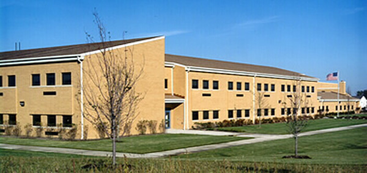
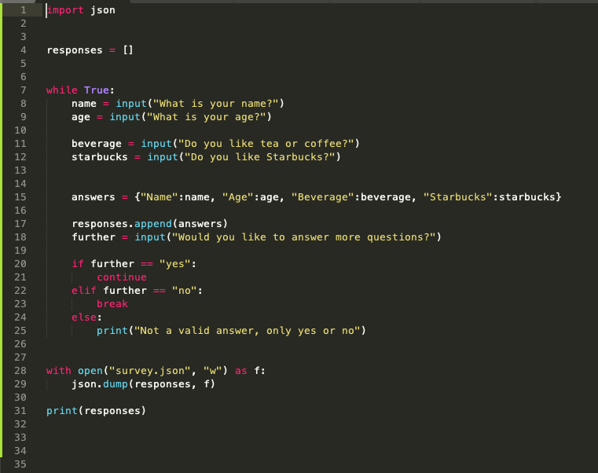

1 / 3

Nancy Young Elementary
2 / 3

Granger Middle School
3 / 3
Metea Valley High School
Welcome to my portfolio! I am a girl who codes from Naperville, IL. I am going to be a senior in high school this fall. I am excited to go to college. I love technology, business, and everything Bollywood! I am also obsessed with DECA which is a competitive business club! I am currently gaining insight into the computer science industry at CNA Chicago through the Girls Who Code summer immersion program. This portfolio includes the work I have done at this program!
During this 7 week summer immersion program with Girls Who Code, I have created programs using Scratch, Python, HTML, CSS, and Java. Below contains some of my work.
Scratch was the first software that I used. Here are some of the games I have created using Scratch.
Maze Game So You Think You Got MovesAfter Scratch, I learned to create programs using Python. Here are some of the programs I have created using Python.
